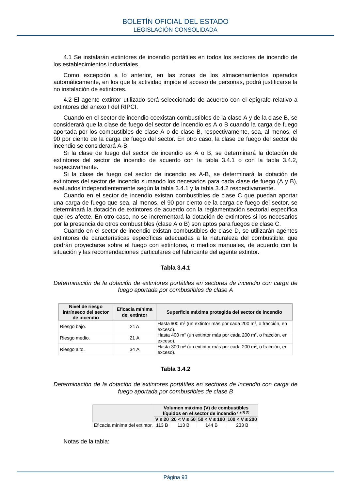

RSCIEI · Página 93 · versión 2025-04-10
SHA256: 85aa0af25d51e5b58d8975a4eefbf76d3f57a8933445cfe814ae9c4818a2e3e7 · página física 93 de 108 · métodos de encabezado
solo si están cotejados.
Formatos: Markdown · JSON de bloques · PDF p. 93 · imagen PNG
4.1 Se instalarán extintores de incendio portátiles en todos los sectores de incendio de los establecimientos industriales. Como excepción a lo anterior, en las zonas de los almacenamientos operados automáticamente, en los que la actividad impide el acceso de personas, podrá justificarse la no instalación de extintores. 4.2 El agente extintor utilizado será seleccionado de acuerdo con el epígrafe relativo a extintores del anexo I del RIPCI. Cuando en el sector de incendio coexistan combustibles de la clase A y de la clase B, se considerará que la clase de fuego del sector de incendio es A o B cuando la carga de fuego aportada por los combustibles de clase A o de clase B, respectivamente, sea, al menos, el 90 por ciento de la carga de fuego del sector. En otro caso, la clase de fuego del sector de incendio se considerará A-B. Si la clase de fuego del sector de incendio es A o B, se determinará la dotación de extintores del sector de incendio de acuerdo con la tabla 3.4.1 o con la tabla 3.4.2, respectivamente. Si la clase de fuego del sector de incendio es A-B, se determinará la dotación de extintores del sector de incendio sumando los necesarios para cada clase de fuego (A y B), evaluados independientemente según la tabla 3.4.1 y la tabla 3.4.2 respectivamente. Cuando en el sector de incendio existan combustibles de clase C que puedan aportar una carga de fuego que sea, al menos, el 90 por ciento de la carga de fuego del sector, se determinará la dotación de extintores de acuerdo con la reglamentación sectorial específica que les afecte. En otro caso, no se incrementará la dotación de extintores si los necesarios por la presencia de otros combustibles (clase A o B) son aptos para fuegos de clase C. Cuando en el sector de incendio existan combustibles de clase D, se utilizarán agentes extintores de características específicas adecuadas a la naturaleza del combustible, que podrán proyectarse sobre el fuego con extintores, o medios manuales, de acuerdo con la situación y las recomendaciones particulares del fabricante del agente extintor. Tabla 3.4.1 Determinación de la dotación de extintores portátiles en sectores de incendio con carga de fuego aportada por combustibles de clase A Nivel de riesgo intrínseco del sector de incendio Eficacia mínima del extintor Superficie máxima protegida del sector de incendio Riesgo bajo. 21 A Hasta 600 m2 (un extintor más por cada 200 m2, o fracción, en exceso). Riesgo medio. 21 A Hasta 400 m2 (un extintor más por cada 200 m2, o fracción, en exceso). Riesgo alto. 34 A Hasta 300 m2 (un extintor más por cada 200 m2, o fracción, en exceso). Tabla 3.4.2 Determinación de la dotación de extintores portátiles en sectores de incendio con carga de fuego aportada por combustibles de clase B Volumen máximo (V) de combustibles líquidos en el sector de incendio (1) (2) (3) V ≤ 20 20 < V ≤ 50 50 < V ≤ 100 100 < V ≤ 200 Eficacia mínima del extintor. 113 B 113 B 144 B 233 B Notas de la tabla: BOLETÍN OFICIAL DEL ESTADO LEGISLACIÓN CONSOLIDADA Página 93
